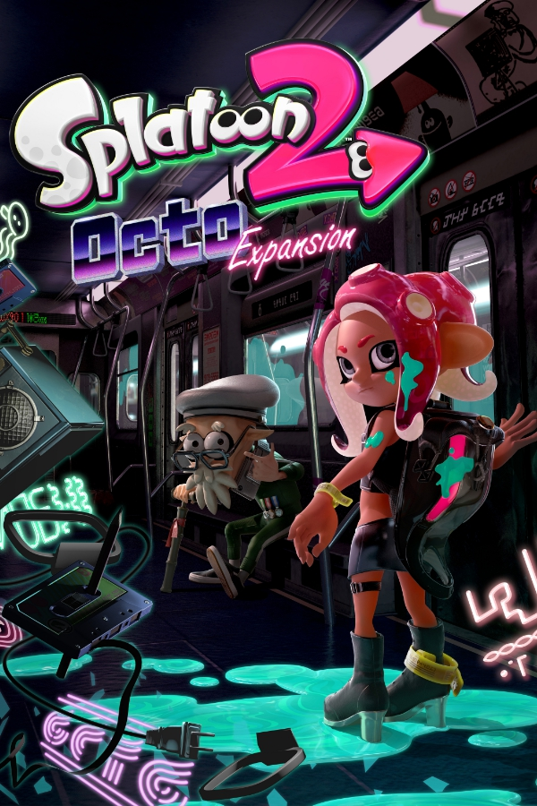
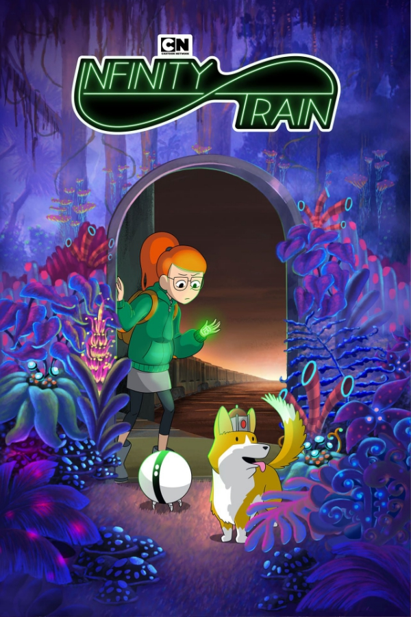

Jessica Williford is a student currently enrolled at the Lethbridge Polytechnic in Multimedia Production. Originally born in the United States, she moved to Canada at age 5 and graduated High School while living in Medicine Hat Before coming to the PolyTech, she spent two years at the University and one year working as the receptionist at a clinic. She plans to graduate from the Multimedia Production course and go into editing and 3d modeling.
While in High School her favourite classes were Art, Multimedia, and Biology. Art has been a long time passion of Jessica and will doodle mindlessly in times of boredom or as a way to keep her hand moving. While in Multimedia Jessica was tasked to create a privacy screen for a worker at the front of the school, and with input and feedback the screen she created is still up to this day. Biology is still one of Jessica’s favourite subjects and she regularly uses her science knowledge to improve her artistic designs.
She enrolled at the University of Lethbridge under a Fine Art Degree. Her classes had her creating and drawing every day of the week. While taking classes she found her favourite subject to be the intro to photography. Where she had hands on experience working with a dark room, film photography, and developing pictures. She still has the Nikon Film camera her uncle gave her when he heard the premise of the class. Another one of her favourite classes was the Video Sketchbook class. There they learned how to edit video and were given abstract assignments to create videos about. Such as “Perspective” or “Montage”. One such video can be seen below if you scroll down.
Jessica enjoys a wide variety of subjects. While this is not all encompassing, theres are the main highlights.
Jessica’s favourite hockey team is the Calgary Flames. Passed down from her family’s passion to the team, Jessica loves to drive with her mom up to the SaddleDome and cheer the team on, win or lose. Much like many, others her favourite player is the goalie Devin Cooley

Many games may try, but nothing will take the place of her favourite video game other than Splatoon. The third person shooter is fully of enriching music, hilarious lore, and an incredibly diverse cast of characters. With the variety of game modes she can boot it on and do whatever she wants, whenever she wants.

A story cut off too short, one of Jessica's favourite TV shows is the mini anthology series Infinity Train. Ten years old as of 2026, Infinity Train has 4 total seasons at this time. Season One follows Tulip, an intelligent girl dealing with the mystery of the train and the strange number on her hand. Its an incredibly well written story with iconic and memorable moments in the later seasons. A must watch if you have the time!
For as long as she has been able to hold a crayon, Jessica has been drawing every single day. Here is a collection of her most recent drawings. Primarily working on her Ipad in procreate, Jessica is currently saving up to purchase a new computer and drawing tablet to go along side it.
A major interest that Jessica has is to learn how to professionally edit Videos and footage. When she was younger she was gifted a laptop with Windows Movie Maker preinstalled and she loved to play around choosing effects and text options in her spare time. Now she’s learning Davinci Resolve Fusion as well as Premiere Pro to further her Editorial Dreams.